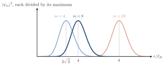
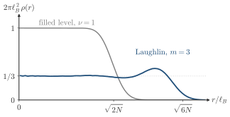

Advanced Quantum Materials 2027 · All lectures · Lecture notes
Session 4. Electrons in a Magnetic Field, Quantum Hall Effect and Landau Levels
4.13 The symmetric gauge and the lowest-Landau-level wavefunctions
To go from single-particle Landau levels to a real many-body quantum Hall wavefunction, we change to the symmetric gauge, \(\mathbf{A}=\tfrac{B}{2}(-y,x,0)\), and to the complex coordinate \(z=x+iy\). We write \(\partial_z = \tfrac12(\partial_x-i\partial_y)\) and \(\partial_{\bar z} = \tfrac12(\partial_x+i\partial_y)\), and then the ladder operator of Section 4.12 in this gauge is proportional to \(\partial_{\bar z} + z/4\ell_B^2\). The condition for the lowest Landau level (LLL), \(a\psi=0\), is therefore the first-order differential equation
\[\left(\partial_{\bar z} + \frac{z}{4\ell_B^2}\right)\psi(z,\bar z) = 0 \quad\Longrightarrow\quad \psi(z,\bar z) = f(z)\, e^{-|z|^2/4\ell_B^2}, \tag{4.9}\]
where \(f(z)\) is an arbitrary holomorphic function, meaning any function built only from powers of \(z\) and never from \(\bar z\). This is the precise form of the statement “any power \(z^m\) times a Gaussian is a zeroth-Landau-level wavefunction”. Holomorphicity is not an extra assumption, since it follows directly when we solve the LLL condition in the symmetric gauge. The single-particle LLL orbitals are then
\[\psi_m(z) = z^m\, e^{-|z|^2/4\ell_B^2}, \qquad m=0,1,2,\dots, \tag{4.10}\]
and each of them has an angular momentum \(m\), which is the eigenvalue of \(L_z\) in this gauge. All of them have the same Gaussian envelope, but the polynomial prefactor \(z^m\) moves the probability density of the orbital further from the origin when \(m\) grows. The reason is that \(|\psi_m|^2\) has its maximum where \(\tfrac{d}{d|z|}\big(|z|^{2m}e^{-|z|^2/2\ell_B^2}\big)=0\), which is at the radius \(r_m = \sqrt{2m}\,\ell_B\).
What is the radius of the maximum of \(|\psi_m|^2\) for \(m=8\), in units of \(\ell_B\)?
Show the answers
- A. ✗ False
This is false. A ring of radius \(2\sqrt2\,\ell_B\) encloses \(r^2/(2\ell_B^2)=4\) flux quanta, while the state \(m=8\) has the angular momentum of \(8\).
- B. ✓ True
This is true. The maximum is at \(r_m=\sqrt{2m}\,\ell_B\), which is \(\sqrt{16}\,\ell_B=4\,\ell_B\) for \(m=8\). The ring encloses \(m\) flux quanta.

The density \(|\psi_m|^2\) for \(m=4\), \(8\) and \(32\), each divided by its maximum. The radius \(2\sqrt{2}\,\ell_B\) of the first option belongs to \(m=4\), and \(8\,\ell_B\) of the third option belongs to \(m=32\). - C. ✗ False
This is false. A ring of radius \(8\ell_B\) encloses \(r^2/(2\ell_B^2)=32\) flux quanta, which would be the state \(m=32\) and not \(m=8\).
4.14 The many-body wavefunction of the filled lowest Landau level
Now we look for the many-body ground state of \(N\) electrons in which every LLL orbital is occupied. Two conditions fix this state completely. It must be built only from LLL orbitals (4.10), and it must be antisymmetric under the exchange of any two electrons, as fermion statistics requires. Both conditions are satisfied by
\[\Psi_1(z_1,\dots,z_N) = \prod_{i<j}(z_i-z_j)\; \exp\!\left(-\sum_i \frac{|z_i|^2}{4\ell_B^2}\right). \tag{4.11}\]
The Vandermonde product \(\prod_{i<j}(z_i-z_j)\) does two things at the same time. First, it is antisymmetric by construction, since the exchange of two coordinates \(z_i\leftrightarrow z_j\) changes the sign of exactly one factor \((z_i-z_j)\), and this gives the overall minus sign that the Pauli principle requires. Second, it is exactly the Slater determinant of the single-particle orbitals \(1,z,z^2,\dots,z^{N-1}\), because of the standard identity for the Vandermonde determinant, \(\det\!\big(z_i^{\,j-1}\big) = \prod_{i<j}(z_j-z_i)\). So (4.11) is the Slater determinant of the \(N\) lowest LLL orbitals, times their common Gaussian envelope, where the Gaussians of the single electrons combine into the collective exponential shown above. This is the exact many-body ground state of \(N\) electrons that fill the lowest Landau level completely, which is the integer quantum Hall state at filling \(\nu=1\). The filling factor \(\nu\) is the number of electrons per flux quantum, and with \(N\) filled Landau levels it equals the total Chern number \(C_\text{tot}=N\) of (4.2), so that \(\sigma_{xy}=\nu\,e^2/h\). At the fractional filling \(\nu=1/m\) of the Laughlin state of Section 4.16 the plateau is still \(\sigma_{xy}=\nu\,e^2/h\), but there \(\nu\) is no longer a Chern number of filled bands.
4.15 Angular momentum, enclosed flux, and the uniform electron gas
In Section 4.13 we saw that a larger angular momentum \(m\) moves the maximum of an orbital further from the origin, to the radius \(r_m=\sqrt{2m}\,\ell_B\). In other words, this orbital encloses a larger area, and so a larger magnetic flux. We will use this link between angular momentum and enclosed flux in Section 4.17 to find how much charge a quasiparticle has. For now, the important consequence is about (4.11) itself. When we sum over the full Slater determinant, we find a density profile that is essentially uniform, or flat, up to a radius set by the highest occupied angular momentum \(m=N-1\). Beyond this radius it drops sharply to zero. In other words, the filled lowest Landau level is a uniform two-dimensional electron gas without any structure, and this is the property that we will now ask also from a Landau level with fractional filling. Figure 4.5 shows both parts of this statement, with the single orbitals as nested rings of growing radius, and the flat droplet that they give when we add them.


In the filled lowest Landau level the density is flat up to the radius set by \(m=N-1\). How does this radius change if we double the number of electrons?
Show the answers
- A. ✗ False
This is false. The radius is \(\sqrt{2(N-1)}\,\ell_B\). It is \(7.1\,\ell_B\) for \(N=26\) and \(10.1\,\ell_B\) for \(N=52\), a factor \(1.4\) and not \(2\). A factor \(2\) needs four times as many electrons.
- B. ✓ True
This is true. The radius is \(r=\sqrt{2(N-1)}\,\ell_B\), so for large \(N\) it grows as \(\sqrt{N}\). For \(N=100\) and \(N=200\) we get \(14.1\,\ell_B\) and \(20.0\,\ell_B\).
- C. ✗ False
This is false. A uniform density means that each electron takes the same area, so more electrons need more area. For \(N=100\) the radius is \(14.1\,\ell_B\) and for \(N=200\) it is \(20.0\,\ell_B\).
- In Section 4.16 the Vandermonde factor of (4.11) is raised to an odd power, which gives the Laughlin state.
- In Section 4.17 the link between angular momentum and enclosed flux gives the charge of a quasihole.
- In Section 5.2 the measured ratio \(e^2/h\) of the filled level is compared with the flux quantum \(h/2e\) of a superconductor.